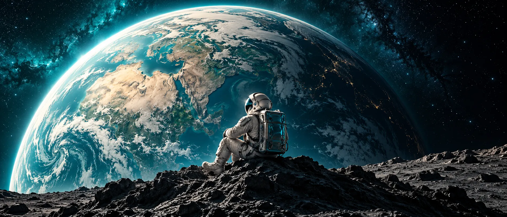

Earth world selected.
Orbit Academy · Space education
Bridging the gap
between space
and your classroom.
Big questions. Clear explanations. Explore our planet and the worlds beyond it, one discovery at a time.
Start learning ↗Read. Observe. Ask.
Build your understanding at your own pace.
Choose your next discovery
Small lessons.
Expanding horizons.
Three introductory learning paths. Read the essentials, check what you learned, then explore the source.
Observe our home
The blue planet
Earth’s global ocean covers about 71% of its surface. Looking at Earth as a whole helps us connect land, water and atmosphere.
Your question: Why does Earth look blue from space?
Look a little farther
A world with rings
Saturn’s rings are made of many small pieces of ice and rock. What looks like a solid band from far away is a collection of separate particles.
Your question: Are Saturn’s rings one solid object?
Follow a flash of light
Rock, light, discovery
A meteoroid is a small object in space. The light produced as it enters an atmosphere is a meteor. A surviving piece that reaches the ground is a meteorite.
Your question: Which name describes the piece on the ground?
Wonder is only the beginning
Look up.
Ask why.
Keep exploring.
Start with a question. Look for evidence. Find a clear explanation, and make room for the next question.
Find your next resource ↗For curious learners and educators
Bring discovery
into every lesson.
Use the learning paths as conversation starters, then follow the original science sources. The artwork is imaginative, not an exact scientific scale model.